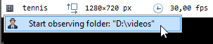

Playback screen user interface¶
The playback screen is divided in the following areas:
1. Image viewport¶
The image viewport is the main area where the video is played back.
Double clicking the image maximizes it in the viewport area. The handles at the four corners of the image can be used to change its size.
2. Infobar¶
The infobar contains the name of the file, the image size and the frame rate.
The file name can be clicked to access a context menu to switch between normal video mode and replay folder observer mode.
3. Drawings toolbar¶
The drawings toolbar contains buttons to create new key images, select the active tool and open the color profile.

The toolbar contains more tools than those immediately visible. Buttons that host extra tools have a little black triangle in the top-left corner. The extra tools can be accessed by right-clicking or long-clicking the primary button.
4. Working zone area¶
The working zone defines the segment of the video that the player is working with. The play head loops within the working zone.

Marks the current time as the time origin. This makes time values relative to this moment.
Locks the working zone start and end point to avoid changing them by mistake.
 Sets the starting point of the working zone within the video.
Sets the starting point of the working zone within the video.
Sets the ending point of the working zone within the video.
Resets the working zone to the whole video.
You can also update the working zone boundaries by directly manipulating the blue end points.
Tip
If the amount of data fits in the cache memory, the working zone will be loaded in memory.
This improves playback performances and enables the and menus. The cache memory can be configured under .
5. Timeline area¶
The timeline area displays the current position within the video, time markers and the speed control.
Time markers¶
Time markers are the colored rectangles inside the timeline gutter, they provide information about annotations. They use the following color coding:
Red: the time origin.
Green: a key image.
Blue: a chronometer.
Purple: a trajectory.
Speed control¶
The speed slider goes from 0 to twice the nominal speed of the video.
The displayed speed value takes into account the slow motion factor configured such that the speed is shown as a percentage of the real world action speed. For example if a video is filmed at 240 fps and saved into a file as 24 fps, the video will normally play back at 10% of the real world speed. In this case the speed control will go from 0 to 20% with a mid-point at 10%.
Warning
If the video cannot be played back at its nominal speed for performance reasons the playback speed value will automatically be lowered down.
Performance for playing back depends on the displayed image size, the frame rate and the file format.
6. Playback controls¶
From left to right the buttons provides the following functions:
Returns to the start of the video or working zone.
Goes back one frame.
Starts playback.
Goes forward one frame.
Goes to the end of the video or working zone.
The playback loops to the start when it reaches the end of the video or working zone.
7. Export controls¶
The export controls provide ways to export videos and images of the current file.
See also: Exporting video and images.